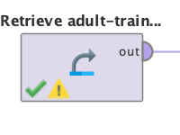
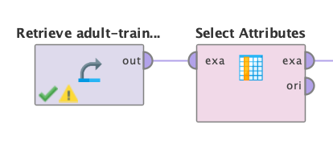
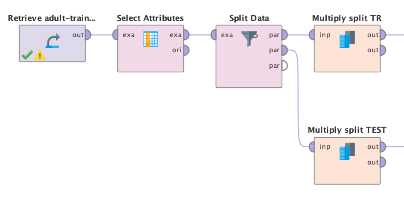
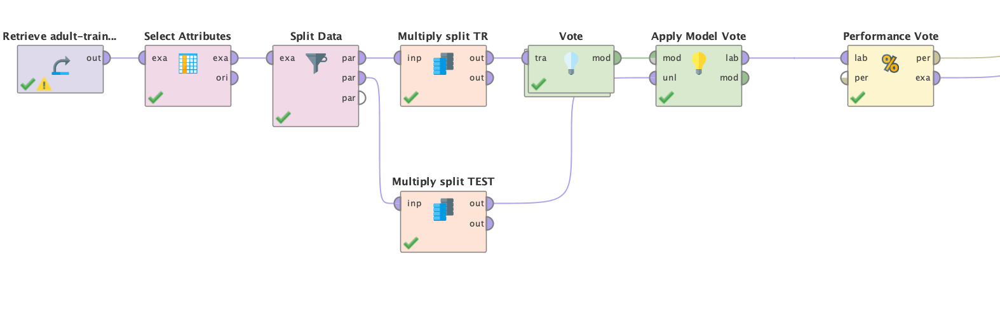
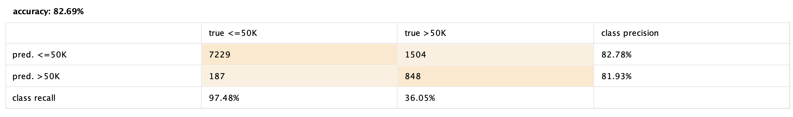

Ingresos de Adultos (Vote)
Herramienda RapidMiner
Problema
Predecir si el ingreso excede $ 50K / año basado en los datos del censo.
Dataset
Fuente uci (Adult)Atributos
Edad
Clase de trabajo
fnlwgt
Educación
Educación-num
Estado civil
Ocupación
Relación
Raza
Sexo
Ganancia de capital
Pérdida de capital
Horas por semana
País de origen
Preparación de los datos:
A la hora de la preparación de los datos se realizaran una inspecion de los datos y la
informacion adjunta que nos aportan de ellos.
De dicho analisis determinamos que los atributos Educación y Educación-num estan relacionados,
por lo tanto eliminaremos Educación.
Realizamos el mismo proceso para Relación y Estado civil, y eliminamos Relación.
Modelado en RapidMiner:
Como primer paso del modelado insertamos en dataset.
En un segundo paso seleccionamos solamente los datos a utilizar que determinamos en la preparación de los datos.
Posterior utilizamos el modulo de Split Data para separar el conjunto en un set de entrenamiento y uno de test.
Aplicamos el modulo de Vote seguido de un Apply Model y un Performance.

Por ultimo configuramos un 3 modelos dento del modulo de Vote
Decision Tree
Con profunidad maxima de 10.
K-NN
Con k = 7
Naive Bayes
Resultados:
El resultado de nuestro modelo tiene un accurancy de un 82.69% lo cual es muy bueno para
Si comparamos los resultados obtenidos con respecto a la tecnica de Bagging obtenemos dos
lecturas.
Que la performance fue ligeramente menor o bien esta mejor ajustado a nuesto set de datos.
